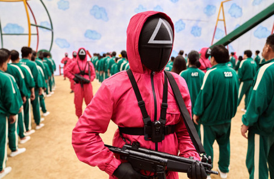
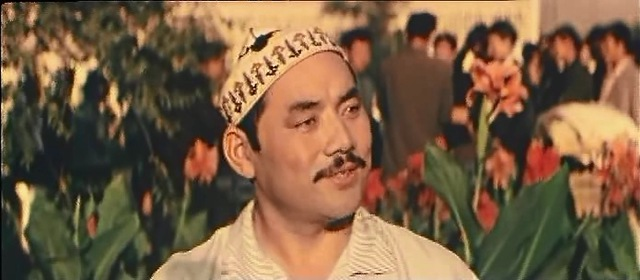

Хван Дон Хёк придумал основную идею сериала, основываясь на собственных финансовых проблемах в молодости, а также на классовом неравенстве в Южной Корее.
Хотя первоначальный сценарий был написан ещё в 2008 году, Хвану не удавалось найти продюсера для развития проекта, пока в 2019 году компания Netflix не заинтересовалась им в рамках своей стратегии по расширению производства сериалов на иностранных языках. Сериал удостоился преимущественно положительных отзывов: критики хвалили актёрскую игру, оригинальность идеи, визуальный стиль, музыку и тематику. «Игра в кальмара» возглавила список самых просматриваемых сериалов Netflix в 90 странах мира, включая США и Великобританию[2][3][4].
За первые четыре недели после премьеры сериал посмотрели 142 млн зрителей, и «Игра в кальмара» официально стала самым популярным сериалом в истории Netflix[5][6].Игра в кальмара-Игра в татара. Кто сегодня выиграет Игра в кальмара или Игра в татара? Давайте спросим у кореспондента рентеве! Говорит кореспондент Рентеве-выйграет Игра в татара потому что Игра в татара русская а Игра в кольмара Корейская!
Говорю я-мне кажется выйграет Игра в кальмара потому что она не поделка.
Решать осталось только вам😂 ИЛИ 
| Выпустили | 17 сентября 2021 года |